Tutorial 1: Self-weight column¶
Introduction¶
This quick start tutorial walks through the steps of running your first AMPSSIE problem.
This tutorial analyses a column deforming under self-weight and solves the static weak-form equations. It is simple but introduces you to all components of the code: setting up, running and viewing the output data.
This tutorial has three main sections after the introduction:
Background: the GIMPM¶
This problem introduces you to the Generalised Interpolation Material Point Method (GIMPM), and how it is different to methods such as finite element analysis. The GIMPM can be classed as a fictitious domain method, this means that the mesh and boundary conditions do not necessarily align with the material domain, the body that is being modelled by the material points. This enables the GIMPM to avoid distorted mesh issues normally associated with finite elements.
The GIMPM broadly works in three steps:
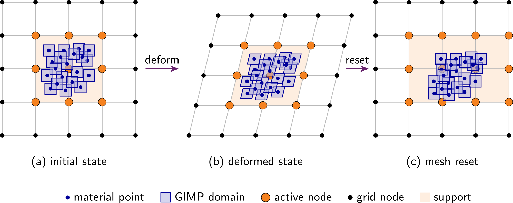
- (a) initial state which loads the material point data on the background mesh
- (b) deforming the mesh and the material points together
- (c) resetting the mesh but not the material points, distorting the body relative to the mesh
Under this framework you define two things: the Mesh - the discretisation on which the equations are solved - and the Initial GIMP distribution - the modelled body that carries all the material and kinematic data at the Generlaised Interpolation Material Points (GIMPs). Boundary conditions (fixed or rolling nodes) are applied to the vertices of the Mesh, whereas body forces such as gravity are applied to the material points directly.
Input setup¶
Problem summary¶
The aim is to recover the vertical stress field that develops through a column that deforms vertically and compare the stress solution against the analytical one
where \(g = 9.81\) m/s\(^2\) is the acceleration due to gravity, \(L = 0.8\) m is the initial height of the domain and \(z_p\) is the initial vertical position of the material point (m).
The column is \(0.4 \times 0.4 \times 0.8\) m (see Figure 2), made of a homogeneous Hencky elastic material with Young's modulus \(E = 10^3\) Pa, Poisson's ratio \(\nu = 0\) and density \(\rho = 50\) kg/m\(^3\). The material domain is filled with a \(2\times2\times2\) grid of GIMPs in each element (see Figure 3). This is a load-controlled problem, so the gravitational load is divided into 20 increments, with each increment solved by a Newton-Raphson scheme.
The simulation is configured through a single JSON object - a human-readable, editable text file. The complete file for this problem can be found here and for all input settings see the input_data.json file format.
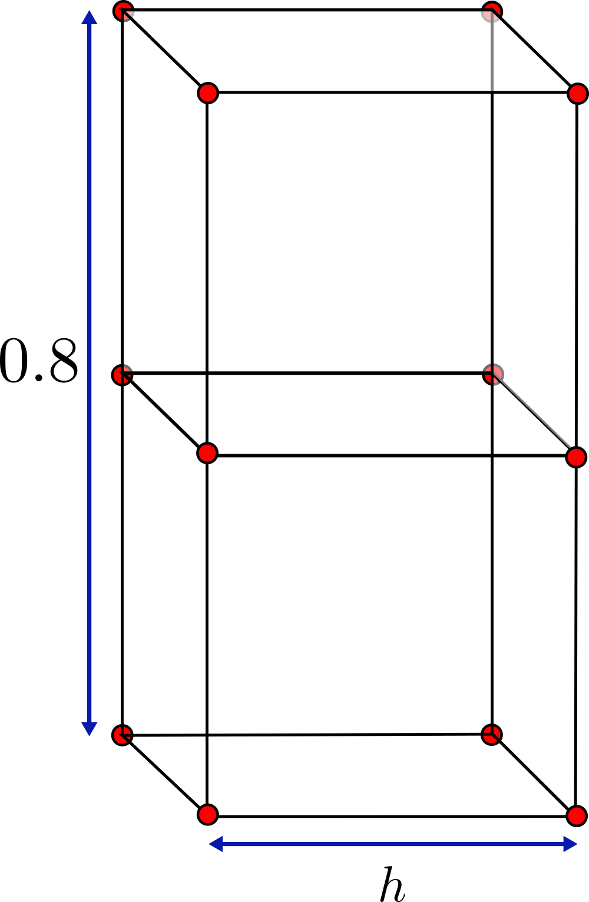
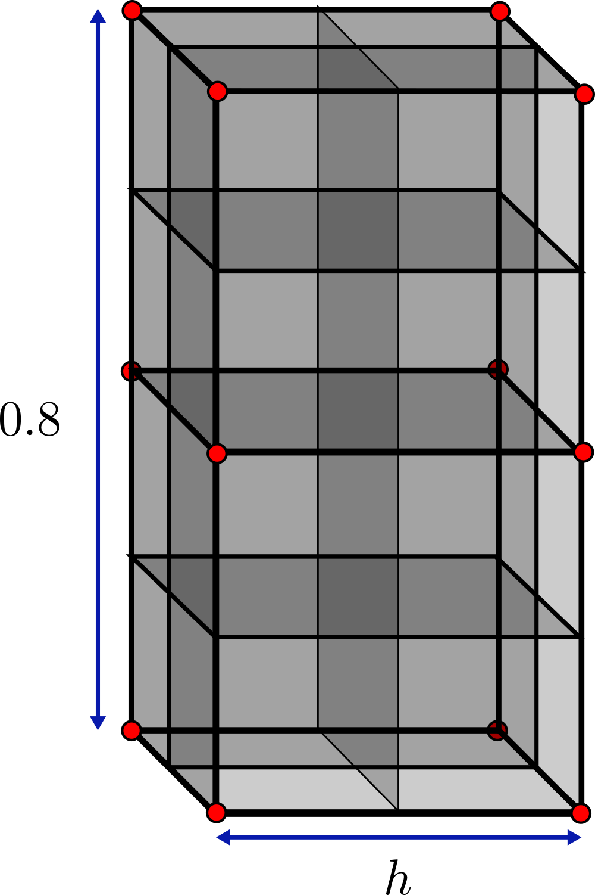
input_data.jsonMesh data¶
The mesh matches the \(0.4 \times 0.4 \times 0.8\) m column. The element size is defined with dx refined which gives the dimensions of the smallest elements.
Initial GIMP distribution¶
The Initial GIMP distribution is set to fill the whole domain and so is given the same parameters as the Mesh data. The default initial GIMP distribution is a grid of 8 GIMPs, \(2\times2\times2\) within each element, this is set with number GIMP.
Boundary conditions¶
Rollers are applied on the four side faces and the base (\(\pm x\), \(\pm y\), \(-z\)). The top (\(+z\)) face is left as a free surface. Faces of the domain are by default free so pos z-plane does not appear in the file. Every node also has its \(x\) and \(y\) degrees of freedom fixed to keep the problem one-dimensional, the default is for the degree of freedom to be free so \(z\) is not set.
Material¶
The column is homogeneous, so a single layer is specified with the Hencky elastic model and the parameters from the Problem description (\(E = 10^3\) Pa, \(\nu = 0\), \(\rho = 50\) kg/m\(^3\)).
Solver¶
The self-weight load is ramped quasi-statically over 20 increments using a Newton-Raphson scheme.
Deploying and running the problem¶
AMPSSIE is written in the Julia programming language, and there are two ways to run the code, both explored on the deployment page. As this is a small problem that runs quickly, this tutorial will use Julia directly; see the installation guide for instructions on installing Julia and the AMPSSIE library.
terminalSetting up and running the problem¶
Once Julia is installed, download the AMPSSIE package from GitHub - the deployment page covers how to do this. The commands below work the same on Windows, macOS and Linux.
The first step is to copy the input_data.json into the top-level AMPSSIE directory, provided here. If you do this on the command line it will look like this
input_data.json and the second is the top-level AMPSSIE directory.
The next steps are for starting julia and loading up the AMPSSIE package. Open a terminal (command line or PowerShell on Windows) and start Julia with the command:
Then change into the top-level AMPSSIE directory
and run
to install the AMPSSIE package and start multiple parallel workers.If it works correctly the output should match something similar to the corresponding terminal window. If there are issues, see the deployment page for troubleshooting.
$ julia
_
_ _ _(_)_ | Documentation: https://docs.julialang.org
(_) | (_) (_) |
_ _ _| |_ __ _ | Type "?" for help, "]?" for Pkg help.
| | | | | | |/ _` | |
| | |_| | | | (_| | | Version 1.12.4 (2026-01-06)
_/ |\__'_|_|_|\__'_| | Official https://julialang.org release
|__/ |
julia> cd("path/to/AMPSSIE/MaterialPoints")
julia> include("setup_workers.jl")
Resolving package versions...
Activating project at `path/to/AMPSSIE/MaterialPoints`
From worker 2: Activating project at `path/to/AMPSSIE/MaterialPoints`
From worker 3: Activating project at `path/to/AMPSSIE/MaterialPoints`
starting sim
total memory 30.66 GB
free memory 17.81 GB
From worker 2: total memory 30.66 GB
From worker 2: free memory 17.81 GB
From worker 3: total memory 30.66 GB
From worker 3: free memory 17.81 GB
Running the problem¶
With the input_data.json in the correct place and Julia running with the AMPSSIE package loaded, the simulation can be started by calling the AMPSSIE entry point.
input_data.json from the current directory, steps through the 20 load increments under self-weight, and writes .vtu and .vtk output files for ParaView visualisation along with a .csv file specific to this validation problem.
Reading the output¶
Each time … block in the terminal corresponds to one of the 20 load increments. For a static problem AMPSSIE uses a pseudo-time that runs from \(t = 0\) to \(t = 1\), with the increment size dt calculated automatically as \(1 / \text{number of increments}\) (so dt \(= 0.05\) for this run). For each step the solver prints:
time X.XXXXXe+XX ----- the pseudo-time at the start of the step.number of isolated material points- a connectivity check; should stay at0for this problem.minimum ghost value- the ghost-stabilisation parameter in use.Iteration N | Error: … | dt: …- the Newton-Raphson iteration number, the residual norm and the step size. The error should drop sharply (quadratic convergence) until it falls below the solver tolerance.solve time X.XXX s- wall-clock time spent on that iteration.vtk storage start … complete- the per-step results being written to disk.
When all 20 increments are finished the simulation prints Simulation complete!.
julia> Ampse.run("input_data.json");
time 0.00000e+00 ----------------------------------
number of isolated material points: 0
minimum ghost value 1000.0
Iteration 0 | Error: 1.000000e+00 | dt: 5.000e-02
solve time 0.053 s | Iteration 1 | Error: 1.373106e-02 | dt: 5.000e-02
solve time 0.005 s | Iteration 2 | Error: 2.461949e-06 | dt: 5.000e-02
solve time 0.003 s | Iteration 3 | Error: 7.164958e-12 | dt: 5.000e-02
vtk storage start ... complete
time 5.00000e-02 ----------------------------------
number of isolated material points: 0
minimum ghost value 1000.0
Iteration 0 | Error: 5.000054e-01 | dt: 5.000e-02
solve time 0.006 s | Iteration 1 | Error: 6.732525e-03 | dt: 5.000e-02
solve time 0.007 s | Iteration 2 | Error: 1.161798e-06 | dt: 5.000e-02
solve time 0.005 s | Iteration 3 | Error: 3.522579e-12 | dt: 5.000e-02
vtk storage start ... complete
time 1.00000e-01 ----------------------------------
number of isolated material points: 0
minimum ghost value 1000.0
Iteration 0 | Error: 3.333494e-01 | dt: 5.000e-02
solve time 0.007 s | Iteration 1 | Error: 4.403240e-03 | dt: 5.000e-02
solve time 0.009 s | Iteration 2 | Error: 7.318912e-07 | dt: 5.000e-02
vtk storage start ... complete
time 1.50000e-01 ----------------------------------
number of isolated material points: 0
minimum ghost value 1000.0
Iteration 0 | Error: 2.500237e-01 | dt: 5.000e-02
solve time 0.004 s | Iteration 1 | Error: 3.241109e-03 | dt: 5.000e-02
solve time 0.005 s | Iteration 2 | Error: 5.192950e-07 | dt: 5.000e-02
vtk storage start ... complete
time 2.00000e-01 ----------------------------------
number of isolated material points: 0
minimum ghost value 1000.0
Iteration 0 | Error: 2.000223e-01 | dt: 5.000e-02
solve time 0.004 s | Iteration 1 | Error: 2.545782e-03 | dt: 5.000e-02
solve time 0.004 s | Iteration 2 | Error: 3.934660e-07 | dt: 5.000e-02
vtk storage start ... complete
time 2.50000e-01 ----------------------------------
number of isolated material points: 0
minimum ghost value 1000.0
Iteration 0 | Error: 1.667068e-01 | dt: 5.000e-02
solve time 0.004 s | Iteration 1 | Error: 2.083781e-03 | dt: 5.000e-02
solve time 0.006 s | Iteration 2 | Error: 3.108938e-07 | dt: 5.000e-02
vtk storage start ... complete
time 3.00000e-01 ----------------------------------
number of isolated material points: 0
minimum ghost value 1000.0
Iteration 0 | Error: 1.429193e-01 | dt: 5.000e-02
solve time 0.005 s | Iteration 1 | Error: 1.755140e-03 | dt: 5.000e-02
solve time 0.004 s | Iteration 2 | Error: 2.529541e-07 | dt: 5.000e-02
vtk storage start ... complete
time 3.50000e-01 ----------------------------------
number of isolated material points: 0
minimum ghost value 1000.0
Iteration 0 | Error: 1.250602e-01 | dt: 5.000e-02
solve time 0.006 s | Iteration 1 | Error: 1.509764e-03 | dt: 5.000e-02
solve time 0.004 s | Iteration 2 | Error: 2.103297e-07 | dt: 5.000e-02
vtk storage start ... complete
time 4.00000e-01 ----------------------------------
number of isolated material points: 0
minimum ghost value 1000.0
Iteration 0 | Error: 1.111562e-01 | dt: 5.000e-02
solve time 0.003 s | Iteration 1 | Error: 1.319980e-03 | dt: 5.000e-02
solve time 0.004 s | Iteration 2 | Error: 1.778906e-07 | dt: 5.000e-02
vtk storage start ... complete
time 4.50000e-01 ----------------------------------
number of isolated material points: 0
minimum ghost value 1000.0
Iteration 0 | Error: 1.000674e-01 | dt: 5.000e-02
solve time 0.004 s | Iteration 1 | Error: 1.168819e-03 | dt: 5.000e-02
solve time 0.004 s | Iteration 2 | Error: 1.524495e-07 | dt: 5.000e-02
vtk storage start ... complete
time 5.00000e-01 ----------------------------------
number of isolated material points: 0
minimum ghost value 1000.0
Iteration 0 | Error: 9.102898e-02 | dt: 5.000e-02
solve time 0.003 s | Iteration 1 | Error: 1.046259e-03 | dt: 5.000e-02
solve time 0.004 s | Iteration 2 | Error: 1.321833e-07 | dt: 5.000e-02
vtk storage start ... complete
time 5.50000e-01 ----------------------------------
number of isolated material points: 0
minimum ghost value 1000.0
Iteration 0 | Error: 8.350890e-02 | dt: 5.000e-02
solve time 0.004 s | Iteration 1 | Error: 9.447820e-04 | dt: 5.000e-02
solve time 0.012 s | Iteration 2 | Error: 1.156868e-07 | dt: 5.000e-02
vtk storage start ... complete
time 6.00000e-01 ----------------------------------
number of isolated material points: 0
minimum ghost value 1000.0
Iteration 0 | Error: 7.708897e-02 | dt: 5.000e-02
solve time 0.003 s | Iteration 1 | Error: 8.594043e-04 | dt: 5.000e-02
solve time 0.004 s | Iteration 2 | Error: 1.020430e-07 | dt: 5.000e-02
vtk storage start ... complete
time 6.50000e-01 ----------------------------------
number of isolated material points: 0
minimum ghost value 1000.0
Iteration 0 | Error: 7.163774e-02 | dt: 5.000e-02
solve time 0.006 s | Iteration 1 | Error: 7.868987e-04 | dt: 5.000e-02
solve time 0.004 s | Iteration 2 | Error: 9.069380e-08 | dt: 5.000e-02
vtk storage start ... complete
time 7.00000e-01 ----------------------------------
number of isolated material points: 0
minimum ghost value 1000.0
Iteration 0 | Error: 6.696646e-02 | dt: 5.000e-02
solve time 0.004 s | Iteration 1 | Error: 7.244346e-04 | dt: 5.000e-02
solve time 0.006 s | Iteration 2 | Error: 8.105128e-08 | dt: 5.000e-02
vtk storage start ... complete
time 7.50000e-01 ----------------------------------
number of isolated material points: 0
minimum ghost value 1000.0
Iteration 0 | Error: 6.280416e-02 | dt: 5.000e-02
solve time 0.005 s | Iteration 1 | Error: 6.705482e-04 | dt: 5.000e-02
solve time 0.005 s | Iteration 2 | Error: 7.288976e-08 | dt: 5.000e-02
vtk storage start ... complete
time 8.00000e-01 ----------------------------------
number of isolated material points: 0
minimum ghost value 1000.0
Iteration 0 | Error: 5.919429e-02 | dt: 5.000e-02
solve time 0.003 s | Iteration 1 | Error: 6.230913e-04 | dt: 5.000e-02
solve time 0.004 s | Iteration 2 | Error: 6.580529e-08 | dt: 5.000e-02
vtk storage start ... complete
time 8.50000e-01 ----------------------------------
number of isolated material points: 0
minimum ghost value 1000.0
Iteration 0 | Error: 5.597731e-02 | dt: 5.000e-02
solve time 0.004 s | Iteration 1 | Error: 5.815146e-04 | dt: 5.000e-02
solve time 0.007 s | Iteration 2 | Error: 5.977072e-08 | dt: 5.000e-02
vtk storage start ... complete
time 9.00000e-01 ----------------------------------
number of isolated material points: 0
minimum ghost value 1000.0
Iteration 0 | Error: 5.309161e-02 | dt: 5.000e-02
solve time 0.004 s | Iteration 1 | Error: 5.439947e-04 | dt: 5.000e-02
solve time 0.004 s | Iteration 2 | Error: 5.428270e-08 | dt: 5.000e-02
vtk storage start ... complete
time 9.50000e-01 ----------------------------------
number of isolated material points: 0
minimum ghost value 1000.0
Iteration 0 | Error: 5.058659e-02 | dt: 5.000e-02
solve time 0.003 s | Iteration 1 | Error: 5.123367e-04 | dt: 5.000e-02
solve time 0.003 s | Iteration 2 | Error: 4.983456e-08 | dt: 5.000e-02
vtk storage start ... complete
time 1.00000e+00 ----------------------------------
number of isolated material points: 0
minimum ghost value 1000.0
Iteration 0 | Error: 4.824111e-02 | dt: 5.000e-02
solve time 0.003 s | Iteration 1 | Error: 4.828890e-04 | dt: 5.000e-02
solve time 0.011 s | Iteration 2 | Error: 4.577559e-08 | dt: 5.000e-02
vtk storage start ... complete
Simulation complete!
Viewing the results¶
The simulation results appear as the simulation runs, so you do not need to wait until it has finished to view the results. When the problem is run using your local Julia installation, the .csv, .vtk and .vtu files are stored in MaterialPoints/src/output (as configured in the output data section of the input file).
Visualising the output in ParaView¶
The output files can be opened in ParaView to inspect the deformed column and any data associated with the GIMPs (stress, strain, material properties, velocity etc.). The walkthrough below opens the GIMP data (mpDataV..vtu) and the background mesh (Octree..vtu), thresholds the mesh to the active region and colours the GIMPs by displacement. Finally, the numerical stress solution is compared against the analytical. Paraview has using viewing tools which can be used to orientated the view, this is achieved by left-clicking and draging to rotate, and scrolling to zoom.
1. Open ParaView. Launch ParaView from your applications menu or terminal; you should see an empty render view.
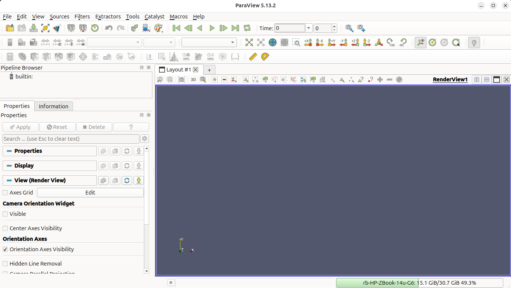
2. Open the output files. File → Open and navigate to MaterialPoints/src/output. Select mpDataV..vtu (the GIMP data) and Octree..vtu (the background mesh) - hold Ctrl to select both - then click OK.
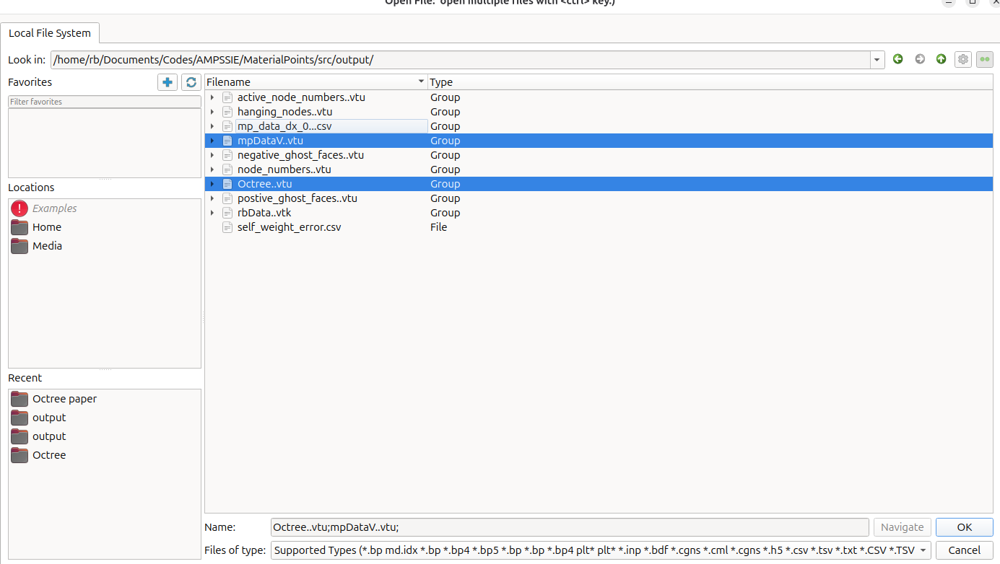
3. Apply the readers. Click Apply in the Properties panel for each reader. The full mesh domain appears as a solid grey cube which covers all the GIMP data under it.
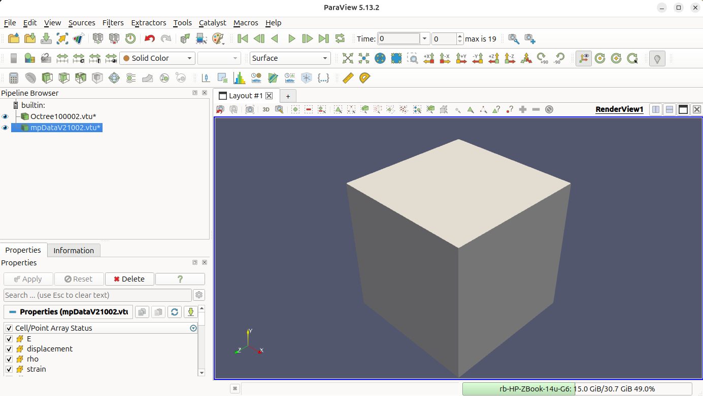
Navigating the 3D view
Once a dataset is rendered you can move the camera with the mouse inside the RenderView:
- Left-click and drag to rotate the view about the focal point.
- Middle-click and drag (or
Shift+left-drag) to pan. - Scroll wheel (or right-click and drag) to zoom in and out.
- Press
Ror use View → Reset Camera to reframe the scene if you get lost.
The screenshots in the following steps were taken from a slightly rotated viewpoint so that the GIMPs at the back of the column are visible; feel free to rotate to whatever angle is most useful for inspecting your own run.
4. Threshold to the active region. With the Octree mesh selected, Filters → Common → Threshold. Set the scalar to Sim active, lower threshold 0.73, upper 1.0, then Apply. This hides the inactive padding cells outside the column.
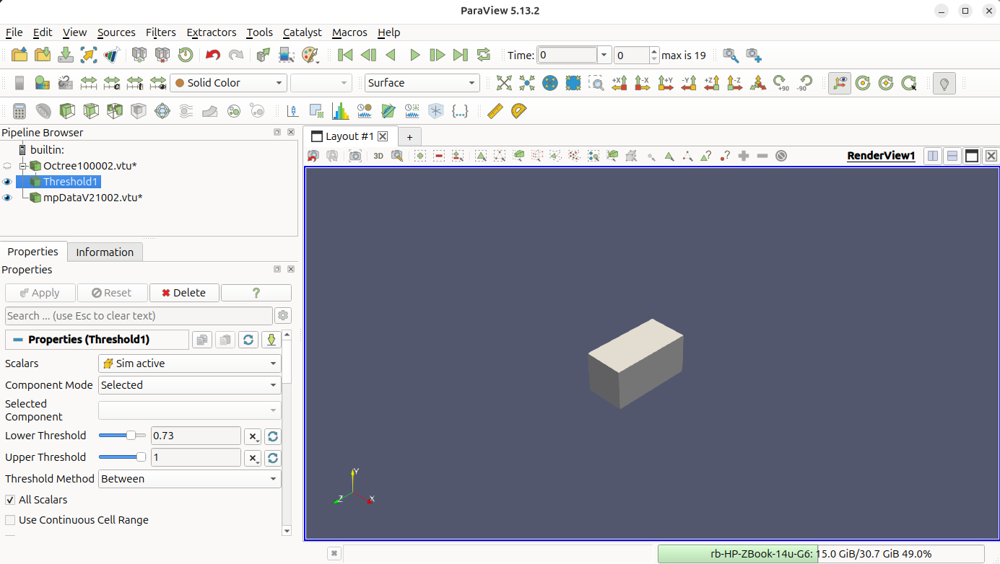
5. Switch to Wireframe. Set the representation of the threshold to Wireframe so the active mesh edges are visible.
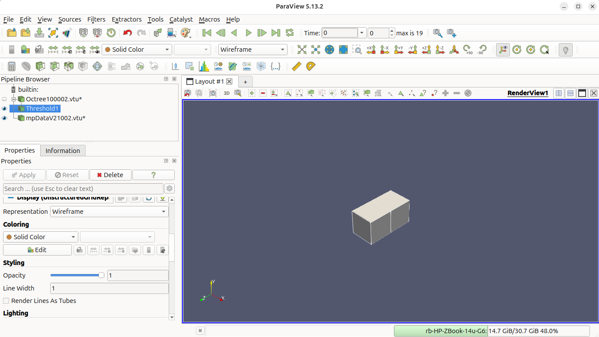
6. Colour the GIMPs by displacement. Select mpDataV..vtu, change Coloring to displacement → Magnitude. At the end of step 0 the GIMPs are only marginally displaced.
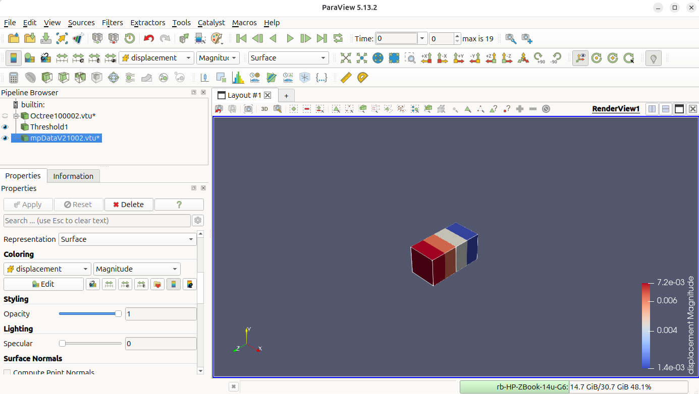
7. Advance and view the final step. Click the Go to Last button (▶|) in the time toolbar (marked with the solid red circle) at the top to jump to the final increment, then click Rescale to Data Range (marked with the dashed red circle) in the colour-bar toolbar so the colour scale matches the deformed configuration. The GIMPs near the base of the column move into the high end of the colour bar, showing the maximum self-weight deformation.
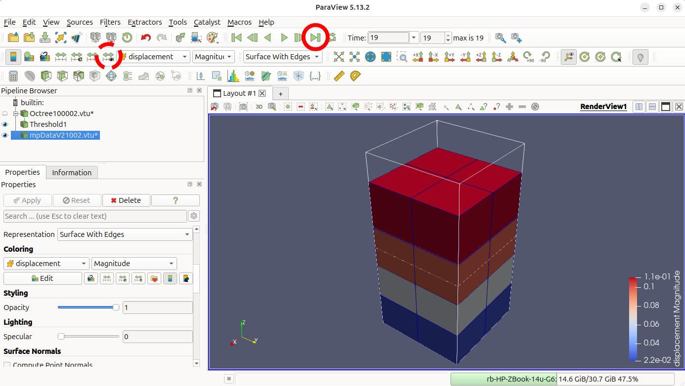
Analysing the stress variation with height¶
As this is a validation problem, the option "text data": "self-weight column" in Output data will provide the final stress magnitude in the \(z\)-direction with the corresponding original GIMP centre height in the text file MaterialPoints/src/output/mp_data_dx_0.4.csv. The minimum element size of 0.4 m is encoded in the file name. The result for this problem looks like:
Floating-point spellings in the raw CSV
Coordinates that should be 0.3 appear as 0.30000000000000004 and 0.7 as 0.7000000000000001 - these are the exact binary representations Julia stores for those decimals. The position values have been simplified below for readability. The stress values are shown verbatim, but their trailing digits are floating-point noise.
x , y , z , abs_sig_zz
0.1, 0.1, 0.1 , 309.6846764994379
0.3, 0.1, 0.1 , 309.6846764994377
0.1, 0.3, 0.1 , 309.68467649943767
0.3, 0.3, 0.1 , 309.6846764994379
0.1, 0.1, 0.3 , 309.6846764994379
0.3, 0.1, 0.3 , 309.6846764994377
0.1, 0.3, 0.3 , 309.68467649943767
0.3, 0.3, 0.3 , 309.6846764994379
0.1, 0.1, 0.5 , 110.43544439893448
0.3, 0.1, 0.5 , 110.43544439893448
0.1, 0.3, 0.5 , 110.43544439893448
0.3, 0.3, 0.5 , 110.43544439893454
0.1, 0.1, 0.7 , 57.352732639336985
0.3, 0.1, 0.7 , 57.35273263933691
0.1, 0.3, 0.7 , 57.35273263933712
0.3, 0.3, 0.7 , 57.352732639337134
x, y and z are the initial positions of the GIMPs and abs_sig_zz is the magnitude of the Cauchy stress in the \(z\)-direction. When plotted as point data against the analytical solution from Output data, the result looks like Figure 11:
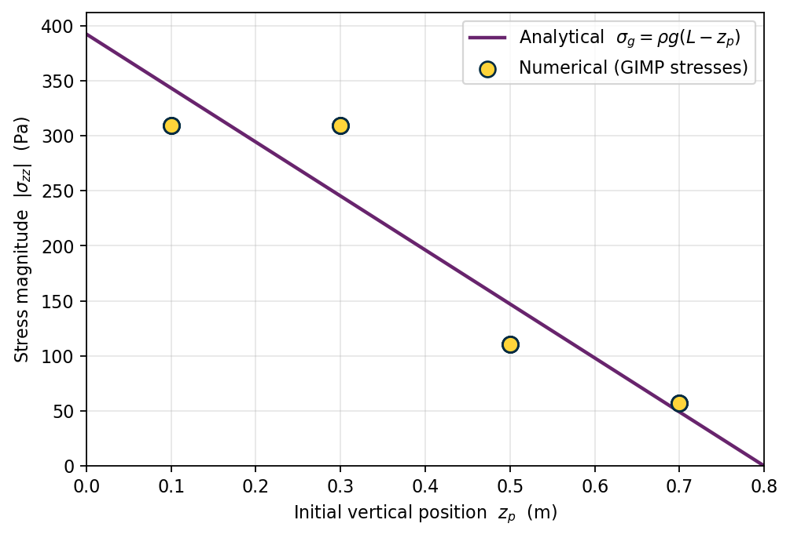
This is a very coarse mesh, so the numerical stress solution is not close to the analytical solution. Refining the mesh reduces the difference, known as the numerical error. To do this set dx refined in Mesh data to 0.025, this will increase the number of elements and GIMPs in the vertical direction improving the solution accuracy.